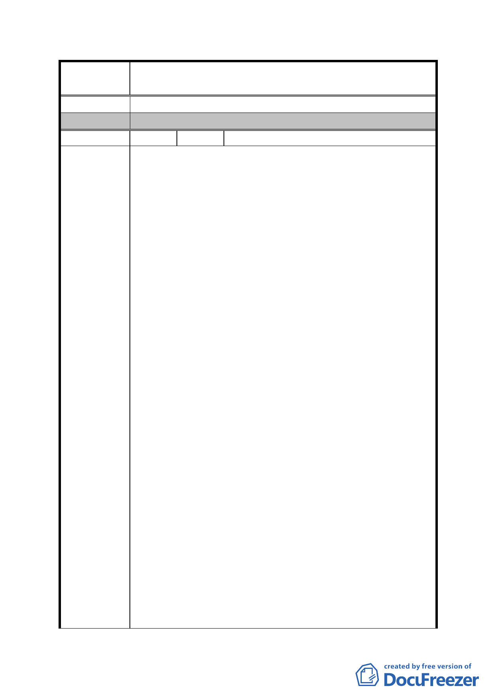

案
名
修訂臺北市「基隆河（中山橋至成美橋段）附近地區土地使
用分區與都市設計管制要點」（北段地區）計畫案
（北段地區）計畫案審議。
委 員 會 決 議 同編號 1。
編 號 38 陳情人 謝慶賢等 31 人
民等憂心此次通檢攸關本地區未來發展，遂集結陳情，盼在
位當局可廣納建言，莫因一時誤判造成遺憾。分述陳情建議
修訂內容如下：
一、除住宅區外之其他建築基地使用管制用途應回歸「台北
市分區使用管制規則」比照第三種商業區規定，得做商
業與住宅使用。
建議理由：
1.本地區地主於區段徵收領回土地時依用地使用分區不同
其領回比例亦有所不同(如商業用地領回比例
0.24~0.26、住宅區領回比例0.36~0.42)，在政府以商業
區、大面積開發等可擁有高強度使用誘使地主同意，始得
順利完成區段徵收業務。
2.然自區段徵收土地點交完竣迄今l0餘年，其僅美麗華百
貨、愛買、家樂福等少數商業設施完成，區域內多數已開
陳 情 理 由 發完成之店面多為閒置狀態，顯見商業需求有限。
3.本區北側內湖科技園區土地廣達81.95公頃，因該都市計
畫陸續開放允許設置企業營運總部、策略性產業、外國駐
台經貿科技商務中心、銀行、餐飲、一般零售等業別，其
範圍幾已涵蓋商業區之主要使用用途，且因屬工業用地，
雖與本區僅一路之隔，但土地價格不及本區土地2分之1，
科技大廠、金融行業等辦公總部自是趨之若鶩，如以商業
用途言，本區高昂之地價實難與該區相對低廉且用途相類
之工業用地競爭市場。
4.由此可見，本地區地主寧捨經濟效益較高之商用建築不
為，而甘就效益相對較低之住宅建築實屬不得不然，亦是
符合最高、最有效之土地利用方式。
5.97年公展案就低部樓層需作為原計畫商業使用(但尚請鈞
府審慎研議本區小規模基地是否仍符合低部樓層商業使
用之僵化規定？），顯見修訂內容已維持本區商業、娛樂
- 98 -